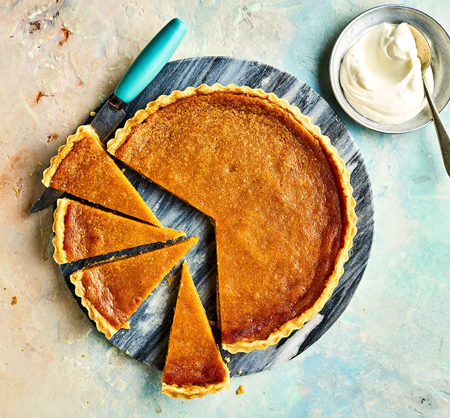

Sweet Potato Pie

Description
Shine a spotlight on sweet potatoes with this pie. The creamy potatoes work
beautifully for the filling, which is encased in a crumbly shortcrust pastry
What you'll need:
Serves 8-10
- 500g sweet potatoes
- 320g sheet of shortcrust pastry
- 125g butter
- 250g caster sugar
- 150ml whole milk
- 3 eggs
- grating of nutmeg
- ½ tsp ground cinnamon
- 1 tsp vanilla bean paste
How to prepare:
- Fill a large pan with boiling water from the kettle and set over a medium-high heat.
Cook the whole, unpeeled sweet potatoes for 30 mins until very tender when pierced with
the tip of a sharp knife. Drain well and leave to cool for 10 mins, then peel.
- Heat the oven to 180C/160C fan/gas 4. Unravel the shortcrust pastry and use it to line a
23cm fluted tart tin. Line with baking parchment and fill with baking beans, then bake for
20 mins. Remove the parchment and beans and bake for another 5 mins.
- Tip the peeled sweet potatoes into a large bowl with the butter and mash with a potato masher
until completely smooth. Tip in the sugar, milk, eggs, spices and vanilla and whisk until
everything is combined and smooth.
- Tip the sweet potato filling into the pastry case, smoothing the top with a spatula. Bake for
50-55 mins until the pastry and the surface of the pie is golden and the middle is set. Leave
to cool completely in the tin, then remove to a cake stand or serving plate and cut into slices
to serve.